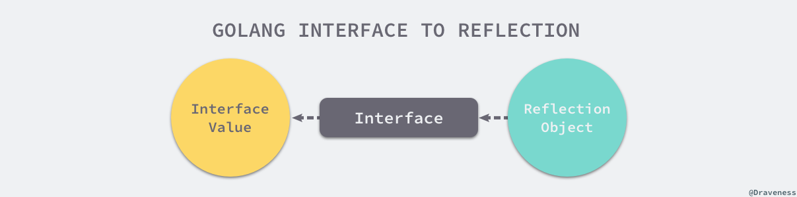

go语言设计与实现之反射
写日志收集项目的时候遇到了一个关于reflect的问题，于是有了这一篇文章。
本文主要介绍go语言中reflect的基本用法，以及在使用反射特性时遇到的一些坑。
关键词：反射
问题引入
使用go-ini时遇到了一个问题：
1 | var cfg *conf.AppConf |
此时会报错：
1 | panic: reflect: call of reflect.Value.Type on zero Value |
修改成以下内容错误就会消失了
1 | var cfg = new(conf.AppConf) // 要为cfg创建一个地址 |
以下是两种声明方式的区别：
- 使用
var声明一个变量的指针，默认值是nil，此时gc并没有为cfg分配内存； - 使用
new()创建一个conf.AppConf的对象（此时gc已经为cfg开辟了内存），同时获得这个对象的指针；
这让我对反射的用法产生了疑问。下面引出本文的核心：反射是什么？
反射是什么
反射是指程序运行期对程序本身进行访问和修改的能力，程序在编译时，变量被转换为内存地址，变量名不会被编译器写入到可执行部分。在运行程序时，程序无法获取自身的信息。
支持反射的语言可以在程序编译期将变量的反射信息如字段名称、类型信息、结构体信息等整合到可执行文件中，并给程序提供接口访问反射信息，这样就可以在程序运行期间获取类型的反射信息，并且有能力修改他们。
Go程序在运行期间使用reflect包访问程序的反射信息。
Go语言中的空接口可以存储任意类型的变量，反射可以在程序运行时动态的获取一个变量的类型信息和值信息。
reflect包
Go语言的反射机制中，任何接口值都是一个具体类型和一个具体类型的值
两部分组成。
Go语言中反射的相关功能是由内置的reflect包提供，任意接口值在反射中都可以理解为reflect.Type和reflect.Value两部分组成，并且reflect包里提供了以下两个函数来获取任意对象的Value和Type：
- reflect.TypeOf：能获取类型信息
- reflect.ValueOf：能获取数据的运行时表示
两个类型是reflect.Type和reflect.Value，他们和函数是一一对应的关系：

reflect.Type
类型reflect.Type是反射包定义的一个接口，可以使用reflect.TypeOf函数获取任意变量的类型，
reflect.Type接口中定义了一些有趣的方法：MethodByName可以获取当前类型对应方法的引用、Implements可以判断当前类型是否实现了某个接口：
1 | type Type interface { |
reflect.Value
反射包中reflect.Value的类型与reflect.Type不同，他被声明成了结构体。这个结构体没有对外暴露的字段，但是提供了获取或者写入数据的方法。
1 | type Value struct{ |
反射包中所有方法都是围绕reflect.Type和reflect.Value两个类型设计的。
通过reflect.TypeOf、reflect.ValueOf可以将一个普通变量转换成reflect.Type和reflect.Value，随后就可以使用反射包中的方法对他们进行复杂的操作。
三大法则
运行时反射时程序在运行期间检查自身结构的一种方式，反射带来的灵活性是一把双刃剑，反射作为一种元编程方式可以减少重复代码，但是过量的使用反射会使我们的程序逻辑难以理解并且运行缓慢。使用反射，一般要遵守反射三原则：
从
interface{}变量可以反射出反射对象；从反射对象可以获取
interface{}变量；要修改反射对象，其值必须可设置；
第一法则
为什么是从interface{}变量到反射对象？当执行reflect.ValueOf(1)是，虽然看起来是获取了基本类型int对应的反射类型，但是由于reflect.TypeOf、reflect.ValueOf的两个方法的入参都是interface{}类型，所以在方法执行的过程中发生了类型转换。
由于Go语言的函数调用都是值传递的，那么变量在函数调用时会进行类型转换，基本类型会转换成interface{}类型，这就是为什么第一条原则是从接口到反射对象。
上面提到的reflect.TypeOf和reflect.ValueOf就能完成这里的转换。Go语言的类型和反射类型处于两个不同的世界，这两个函数是链接这两个函数的桥梁。

通过以下例子介绍他们的作用，reflect.TypeOf获取了变量author的类型，reflect.ValueOf获取了变量的值draven。如果我们知道了一个变量的值和类型，那么就意味着我们知道了这个变量的全部信息。
1 | func main(){ |
1 | $ go run main.go |
拿到变量的类型以后，可以通过Method方法获得类型实现的方法，通过Field获取类型包含的全部字段，对于不同的类型， 可以通过调用不同的方法来获取相关信息：
- 结构体：获取字段的数量并通过下标和字段名获取字段名StructField；
- 哈希表：获取哈希表的Key类型；
- 函数或方法：获取入参和返回值的类型；
- ...
总而言之，使用reflect.TypeOf和reflect.ValueOf能够获取
Go语言中的变量对应的反射对象，我们就能获得当前的数据类型和操作，并可以使用这些运行时获取结构执行方法。
第二法则
反射的第二法则是可以从反射对象获取interface{}变量，reflect中的reflect.Value.Interface()可以将反射对象还原成接口类型的变量：

调用reflect.Value.Interface方法只能获得interface{}类型的变量，如果还想将其还原成最原始的状态还需要对其进行显式类型转换：
1 | v := reflect.ValueOf(1) |
从反射对象到接口值的过程是从接口值到反射对象的镜面过程，两个过程都需要经历两次转换：
- 从接口值到反射对象：
- 从基本类型到接口类型的类型转换；
- 从接口类型到反射对象的转换；
- 从反射对象到接口值：
- 从反射对象转换成接口类型；
- 通过显式类型转换成原始类型；

不是所有的变量都需要类型转换这一过程。如果变量本身就是interface{}类型的，那么它不需要类型转换。只由将反射对象转换成基本类型时才需要显式的转换操作。
第三法则
Go语言反射的最后一条法则是与值是否可以被更改有关，如果我们想要更新一个reflect.Value，那么它持有的值一定是可以被更新的，假设由以下代码：
1 | func main(){ |
1 | $go run main.go |
上述代码出错的原因是：由于Go语言的函数调用都是传值的，所以我们得到的反射跟最开始的变量没有任何关系，那么直接修改反射对象无法改变原始变量，程序就会报错。
想要修改原变量只能使用如下的方法：
1 | func main() { |
1 | $go run main.go |
- 调用
reflect.ValueOf获取变量指针（传指针）； - 调用
reflect.Value.Elem获取指针指向的变量； - 调用
reflect.Value.SetInt更新变量的值；
由于Go语言的函数调用都是值传递的，所以我们只能用迂回的方式改变原变量：先获取指针对应的reflect.Value，再通过reflect.Value.Elem方法得到可以被设置的变量，通过以下代码理解这个过程：
1 | func main(){ |
如果不能直接操作i变量修改其持有的值，就只能获取i变量所在的地址并使用*v修改所在的地址中存储的整数。
类型和值
Go语言的interface{}类型在语言内部是通过reflect.emptyInterface结构体表示的，其中的typ字段用于表示变量的类型，另一个word字段表示指向内部封装的数据：
1 | type emptyInterface struct { |
reflect.TypeOf实现
用于获取变量类型的reflect.TypeOf函数将传入的变量隐式转换成reflect.emptyInterface类型并返回其中存储的类型信息reflect.rtype：
1 | func TypeOf(i interface{}) Type { |
reflect.rtype是一个实现了reflect.Type接口的结构体，该结构体实现的reflect.rtype.String方法可以帮助我们获取当前类型的名称：
1 | func (t *rtype) String() string { |
reflect.TypeOf的实现原理并不复杂，它只是将一个interface{}变量转换成了内部的reflect.emptyInterface
表示，然后从中获取相应的类型信息。
reflect.ValueOf实现
用于接口值的reflect.Value的函数实现reflect.ValuesOf实现也非常简单，在该函数中先调用reflect.escapes保证当前值逃逸到堆上，然后通过reflect.unpackEface从接口中获取reflect.Value结构体：
1 | func ValueOf(i interface{}) Value { |
reflect.unpackEface会将传入的接口转换成reflect.emptyInterface，然后将具体类型和指针包装成reflect.Value结构体后返回。
编译调用
reflect.TypeOf和reflect.ValueOf的实现都很简单，我们已经分析了这两个函数的实现，现在需要了解编译器在调用函数之前做了哪些工作：
1 | func main() { |
1 | $go build -gcflags="-S -N" main.go |
从上面这段截取的汇编语言，我们可以发现在函数调用之前就已经发生了类型转换，上述指令将int类型的变量转换成了占用16字节的autotmp_19+280(SP) ~ autotmp_19+288(SP)
接口，两个LEAQ指令分别获取了类型的指针type.int(SB)以及变量i所在的地址。
当我们想要将一个变量转换成反射对象时，Go语言会在编译期间完成类型转换，将变量的类型和值转换成了interface{}并等待运行期间使用reflect包获取接口中存储的信息。
更新变量
当我们想要更新reflect.Value时，就需要调用reflect.Value.Set更新反射对象，该方法会调用
- reflect.flag.mustBeAssignable：用于检查当前反射对象是否可以被设置
- reflect.flag.mustBeExported：用于检查字段是否对外公开
1 | func (v Value) Set(x Value) { |
reflect.Value.Set会调用reflect.Value.assignTo并返回一个新的反射对象，这个反射对象指针会直接覆盖原反射变量。
1 | func (v Value) assignTo(context string, dst *rtype, target unsafe.Pointer) Value { |
reflect.Value.assignTo
会根据当前和被设置的反射对象类型创建一个新的reflect.Value结构体：
- 如果反射对象的类型是可以被替换的，就会直接返回目标对象；
- 如果当前接口对象是接口并且目标对象实现了接口，就会把目标对象简单包装成接口值；
在变量更新的过程中，reflect.Value.assignTo返回的
reflect.Value中的指针会覆盖当前反射对象中的指针实现变量的更新。
实现协议
reflect包提供了reflect.rtype.Implements方法可以用于判断某些类型是否遵循特定的接口。在Go语言中获取结构体的反射类型reflect.Type还是比较容易的，但是想要获得接口类型就需要通过以下方式：
1 | reflect.TypeOf((*<interface>)(nil)).Elem() |
通过一个例子来介绍如何判断一个类型是否实现了某个接口。
我们通过一个例子来介绍如何判断一个类型是否实现了某个接口。假设我们需要判断如下代码中的CustomError是否实现了Go语言标准库中的error接口：
1 | type CustomError struct{} |
上述代码的运行结果说明了：
CustomError类型没有实现error接口；*CustomError类型实现了error接口；
分析一下reflect.rtype.Implements方法的工作原理：
1 | func (t *rtype) Implements(u Type) bool { |
reflect.rtype.Implements会检查传入的类型是不是接口，如果不是接口或者是空值就会直接panic。
在参数没有问题的情况下，上述方法会调用私有函数reflect.implements判断类型之间是否有实现关系：
1 | func implements(T, V *rtype) bool { |
如果接口中不包含任何方法，就意味着这是一个空的接口，任意类型都自动实现该接口，此时会直接返回true。
在其他情况下，由于方法都是按照字母序存储的，reflect.implements会维护两个用于遍历接口和类型方法的索引i和
j判断类型是否实现了接口，因为最多只会进行n次比较（类型的方法数量），所以整个过程的时间复杂度是O(n)。
方法调用
作为一门静态语言，如果想要通过reflect包利用反射在运行期间执行方法不是一件容易的事情，下面的代码使用反射来执行Add(0, 1)函数：
1 | func Add(a, b int) int {return a + b} |
可以概括为以下几个步骤：
- 通过调用
reflect.ValueOf获取函数Add对应的反射对象； - 通过调用
reflect.rtype.NumIn获取函数的入参个数； - 多次调用
reflect.ValueOf函数逐一设置argv数组的各个参数； - 调用反射对象
Add的reflect.Value.Call方法并传入参数列表； - 获取返回值数组、验证数组的长度以及类型并打印其中的数据；
使用反射来调用方法非常复杂，原本只需要一行代码就能完成的工作，现在需要十几行代码才能完成，但这也是在静态语言中使用动态特性所需要付出的成本。
1 | func (v Value) Call(in []Value) []Value { |
reflect.Value.Call是运行时调用方法的入口，它通过两个mustBe开头的方法确定了当前反射对象的类型是函数以及可见性，随后调用reflect.Value.call完成方法调用，这个私有方法的执行过程会分成以下的几个部分：
- 检查输入参数以及类型的合法性；
- 将传入的
reflect.Value参数数组设置到栈上； - 通过函数指针和输入参数调用函数；
- 从栈上获取函数的返回值；
下面将按照以上的顺序分析reflect进行函数调用的过程。
参数检查
参数检查是通过反射调用方法的第一步，在参数检查期间会从反射对象取出当前的函数指针unsafe.Pointer，如果该函数指针是方法，那么会通过reflect.methodReceiver获取方法的接收者和函数指针。
1 | func (v Value) call(op string, in []Value) []Value { |
上述方法会检查入参个数的个数以及参数的类型与签名中的类型是否可以匹配，任何参数的不匹配都导致整个程序的崩溃中止。
准备参数
当我们已经对当前方法的参数完成验证后，就会进入函数调用的下一个阶段，为函数调用准备参数。Go语言的函数调用惯例是函数或者方法在调用时，所有的参数都会被以依次放到栈上。
1 | nout := t.NumOut() |
通过
reflect.funcLayout计算当前函数需要的参数和返回值的栈布局，也就是每一个参数和返回值所占的空间大小；如果当前函数有返回值，需要为当前函数的参数和返回值分配一片内存空间
args；如果当前函数是方法，需要向将方法的接收接收者者拷贝到
args内存中；将所有函数的参数按照顺序依次拷贝到对应
args内存中使用
reflect.funLayout返回的参数计算参数在内存中的位置；这个返回的参数是什么意思鸭？
将参数拷贝到内存空间中；
调用函数
准备好调用函数需要的全部参数后，就会通过下面的代码执行函数指针了。函数入参是栈类型、函数指针、参数、和返回值的内存空间、栈的大小，以及返回值的偏移量：
1 | call(frametype, fn, args, uint32(frametype.size), uint32(retOffset)) |
上述函数实际上并不存在，他会在编译期间链接到reflect.reflectcall这个用汇编语言实现的函数上。
处理返回值
当函数调用结束以后，就会开始处理函数的返回值：
- 如果函数没有任何返回值，会直接清空args中的全部内容来释放内存空间；
- 如果当前函数有返回值：
- 将
args中于输入参数有关的内存空间清空； - 创建一个
nout长度的切片用于保存由反射对象构成的返回值数组； - 从函数对象中获取返回值的类型和内存大小，将
args内存中的数据转换成reflect.Value类型并存储到切片中；
- 将
1 | var ret []Value |
由reflect.Value构成的ret数组会被返回到调用方，到此使用反射实现函数调用的过程就结束了，
小结
Go 语言的 reflect
包为我们提供了多种能力，包括如何使用反射来动态修改变量、判断类型是否实现了某些接口以及动态调用方法等功能，通过分析反射包中方法的原理能帮助我们理解之前看起来比较怪异、令人困惑的现象。
鸣谢
https://draveness.me/golang/docs/part2-foundation/ch04-basic/golang-reflect